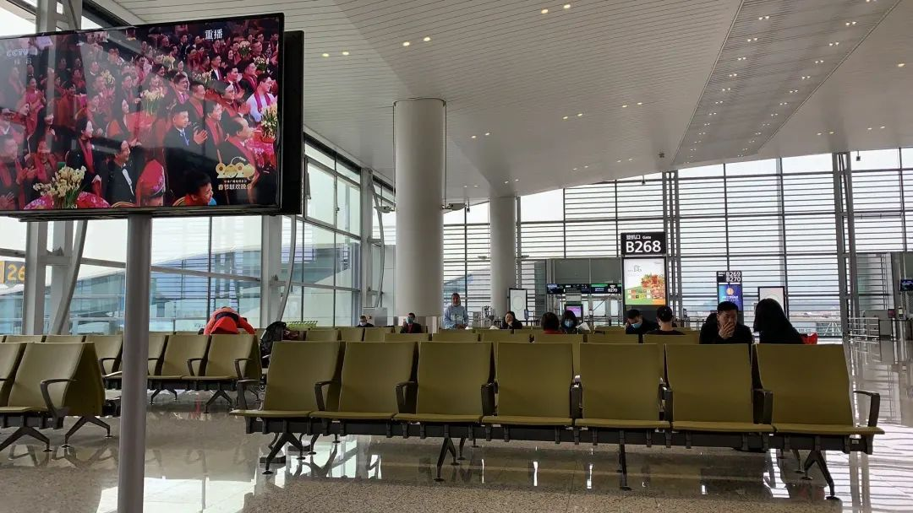
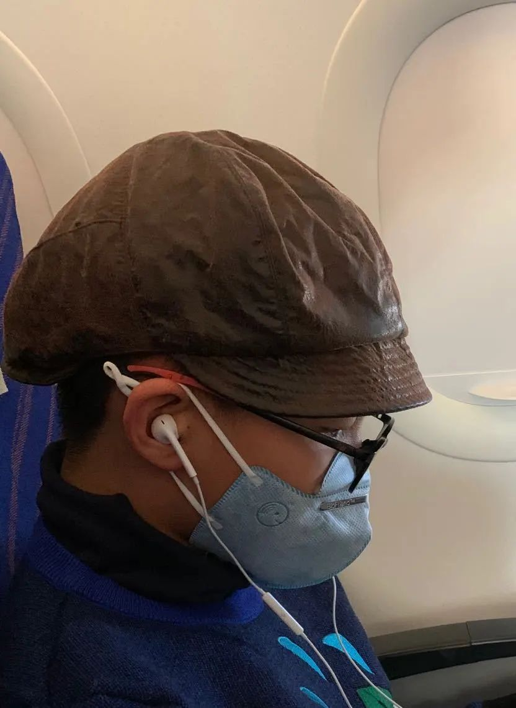

没有人想做这座英雄城市的“城市英雄” - 经济观察网 － 专业财经新闻网站
原文链接 备份链接 陈润/文 一 从2020年1月15日回武汉至今，我在武汉整整呆了24天。这是我自大学毕业以来在武汉呆得最久的一段时间，也是自去年家人搬回武汉陪伴最长的一段日子，更是我人生至今最困难悲伤的一段岁月。 一切都因新型冠状病毒 …


非常时期
“闯关东”
作者｜北北
一
今年春节我们计划回哈尔滨老家，看望爷爷奶奶。爸爸妈妈都是哈尔滨人，我小时候回去过两次，但近八九年都没有回去过，已经不太记得那座城市什么样了。听说冬天的哈尔滨是著名的旅游城市，有冰灯看，还可以滑冰滑雪、打爬犁，有很多冰雪娱乐项目。而且我两年未见的好朋友也要回绥化老家，我们约好在哈尔滨见面，一起去冰雪大世界。期末考试一结束，我就日盼夜盼爸爸放假，我们好出发回东北。可是谁也没有想到，就在春节将要到来的时候，武汉突然爆发了新型冠状肺炎疫情。一开始，身边的人还没有什么感觉。我的朋友垚垚和西珈他们两家都是湖北人，他们还都照常准备着自驾回老家。但是妈妈非常有危机意识，她开始集中精力关注这种还没被命名的新冠病毒的各种消息，并很快得出判断，这个病毒会大规模扩散，因为武汉前期没有预警，而现在恰恰是寒假和春节期间，成千上万的武汉人或外出旅行，或已经踏上返乡之旅。经历过非典的妈妈说，这次跟非典不一样，非典没有赶上春运，这次赶上春运，差不多半个中国的人都在流动，非常难判断谁已经感染了，又带毒感染了多少人。病毒会以非常快的速度传遍全国甚至国外。我和爸爸每天听妈妈科普教育，都感到非常紧张。尤其是爸爸还要上班，妈妈要求他每天出门必须戴口罩，结果爸爸还被同事们笑话太过谨慎。从19号开始，妈妈就每天发各种科普微信给家里的老人，还有她的朋友、学生们。有的学生没有口罩，妈妈就送给他们口罩，让他们回家路上一定要戴着。

没什么人的广州机场
爸爸妈妈都密切关注疫情，火车票飞机票都可以免费退掉了，他们也在犹豫到底还要不要回哈尔滨。而这时候我已经知道，冰雪大世界不开放了，我的好朋友也取消了来哈尔滨玩的计划，我其实也对回去没什么热情了。但爷爷奶奶似乎不愿意我们取消机票，奶奶还专门打电话给妈妈，希望我们回去过年。大年三十儿，新闻上说已经确诊886例，国内29个省都有了确诊案例，其中湖北549例，广东53例，黑龙江也有4例。而且武汉已经封城，我的朋友垚垚和西珈他们虽然已经在年前回到湖北老家，但看到形势如此严峻，已经决定初一一早就飞驰回广州。他们前脚走，后脚他们老家当地也封城了。妈妈每天看微博，上面有很多很多武汉人求救的信息，妈妈说，武汉实际的情况可能非常恐怖，我们必须提高警惕，这可能是一场全世界跟病毒的战争。
除夕夜，我们一家三口都忧心忡忡，没什么心思过年，担心着回哈尔滨的行程。因为不好拒绝爷爷奶奶的强烈要求，我们只好冒着被感染的危险，按原计划于初一一早飞往哈尔滨。为了保证三个人安全健康地抵达哈尔滨，我们制定了周密的计划。首先，将乘坐出租车前往机场，改为由爸爸的朋友送我们去。其次，根据环境的危险程度换不同的口罩，在车上我们使用的是外科医用口罩，到了更加封闭的飞机上，就换用n95级别的口罩。最后，吃饭或者是喝水前必须全面消毒。以前我们都嘲笑妈妈“过度清洁”，她自打我出生，就常备各种口罩（什么n95、防雾霾、医用外科都有）、酒精棉片、免洗洗手液这些东西，每次出门都带着这个小清洁包。没想到这些她日常屯下的物资立下汗马功劳。因为这个时候已经根本无法买到，连消毒水都紧缺了。临出门三天，她还给来我们家一起过年的姥姥姥爷屯了蔬菜水果蛋奶粮油，甚至还有两大桶纯净水，一大箱方便面；给猫准备好充足的猫粮和猫砂。她说，家中有粮，心里不慌。这样我们不在家，老人和猫都能不出门就生活无忧。
二
初一一大早，我背着装满“战略物资”的双肩包，爸爸妈妈拖着塞满了过冬衣物的大箱子，心惊胆战地出发了。机场人不多，安检很严格。登机之后，发现乘客只有三分之一，但是座位很紧凑，飞机也很小，让人觉得有些不安。我们三个座位连着，但没有按照座位号坐，而是挑了前后排都没有旅客的一排坐下来，尽量不跟其他的乘客接触。飞机起飞了以后，机舱门会关闭，空气不能流通，这时候最容易感染。但很不幸，刚起飞没多久，前三排的一个小孩儿可能不舒服，就吐了，还弄脏了座位。我们在后面看着很难受，但也不能抱怨，小孩子也不是故意的。飞行中，不管做什么，我们都小心翼翼，水也只敢喝自己杯里的，连飞机餐也匆匆吃两口就吃不下了。飞行途中我还换了口罩。因为我的口罩不知道为什么中间破了一个洞。后来喝水的时候，妈妈一开杯盖，喷了我一脸，可能是因为高空水压变化，我的口罩一下湿了，我们只剩下一个n95口罩了，但为了保险，妈妈还是毫不犹豫地给我换了新的。我们全家都穿着带帽衫，戴着眼镜，全程除非必要，都把手插兜里，以免触碰自己的脸。经历了4个多小时难熬又无聊的飞行，我们安全地抵达了哈尔滨机场。

全副武装的我
但是一到哈尔滨机场，感觉气氛完全不同。既没有人给你测体温，机场戴口罩的人也不多。这跟广州机场每过一关都有人测体温，真是天壤之别。在机场外面到处都是不戴口罩的东北男人，他们一边抽着烟，一边随地吐痰，还时不时地跟过往旅客搭讪。有个男人走到我和妈妈身边，先是喷了一口烟，然后问我们“坐车吗？住店吗？比滴滴便宜！”说完，又吐了口痰在我们身边的地上。我们俩都吓坏了，连忙摇头说“不坐”“不住”。幸好爸爸和舅舅推着行李及时出来了，我们赶紧走了。
三
回到家以后我们赶紧消毒洗澡，希望把身上的病毒全部消灭。我们都以为到了家以后就能安安静静地待着了。可是，没想到家里的亲戚依旧很热情，根本不管什么疫情不疫情，都安排好了初几去谁家，初六还要参加大亮叔叔的婚礼。爸爸妈妈都坚决反对，妈妈给爸爸下了最后通牒，如果爸爸不能说服他们家的亲戚，她就带着我去住酒店，跟他们隔离开来。爸爸于是开始不停地给他的三叔二大爷七姑八姨们打电话，不断重复说病毒很厉害，得了会死人，千万不能出门，更不能聚会。一开始，亲戚们都很不能理解，他们说咱黑龙江这么冷，还下大雪，武汉那病毒传过来也冻死了，根本不可能传染，非典咱们这儿一个感染的也没有。这些言论我听了都很着急很生气，这个病毒根本不怕冷好吗？专家说怕热怕酒精啊。但是也不管亲戚们高不高兴，反正是坚决不见面不聚会。大舅爷和三爷爷都来到了我们家楼下，我们也坚决没让他们上来见面。太奶奶九十多岁了，我们也没去她家看她。我们刚下飞机，还没过十四天，可能携带病毒，不见面也是为亲戚们好。叔叔的婚礼取消了，他爸爸很不开心，叔叔说如果不取消，回单位就会被开除，他爸爸才没再唠叨。

每天只能在奶奶窗前看看外面的世界
我们在爷爷奶奶家里呆了九天，没出过门没下过楼。但喜欢出去外面逛的爷爷忍不住，三番五次要下楼遛弯儿，没办法，爸爸给他全副武装之后，让他去转转。结果初四他出门回来报告说，咱们哈尔滨人不在乎，大街上不戴口罩的很多。到了大年初七那天，他回来说，超市不戴口罩不给进了，小区里电梯什么的都有很刺鼻的消毒水味道。我们知道哈尔滨的形势已经有些紧张了，听说我们小区旁边的工厂医院发现了一个病例，还有消息说，东北人最爱去搓大澡的洗浴中心，据说有一家发现了病例，去洗过澡的都隔离了。这些消息不知真假，但足以吓唬不信邪的老百姓了。
四
在哈尔滨八天，我们不过是换了一个地方宅着。妈妈给我安排了丰富的作业，语数外一样不少。不过我也不能抗议，因为她每天趴那里写论文，比我还刻苦。初九一早，我们按计划返程。本来爷爷奶奶还一直劝我们在家多待几天，说广州比哈尔滨危险。但因为爸爸妈妈都有工作要做，我们还是按原计划行事。
返程时，哈尔滨的太平机场（左）及全程没敢摘口罩的我（右）


这次太平机场可完全不同了，两道测体温，一道机器，一道人工。在登机口，我们要做摆渡车。结果好几十人都上了摆渡车之后，摆渡车迟迟不开，车里人挨人，虽然都戴着口罩，大家还是很紧张。终于工作人员来了，叫下去几个乘客，说他们不能登机了，因为他们要转机去的国家已经闭关，不让中国人过去了。在回广州的飞机上，我们更加谨慎了，因为这趟飞机满满登登，所以我们全程没摘口罩，不吃不喝不去厕所。五个小时之后落地时，我已经饿得晕头转向了。出了机场，烟鬼爸爸迫不及待地要抽烟，妈妈赶紧给他手烟盒都用酒精消毒。我看见旁边有两个男人，一个没火，跟另外一个借，另外一个就把自己叼着的烟从嘴里拿出来借给他，没火的那位也不嫌弃，接过来就点着自己的烟，然后借火的那位接过来直接放嘴里继续抽。妈妈和我看着这一波操作，心惊肉跳，觉得他们真是“用绳命在抽烟”。
爸爸的朋友又冒险来接我们，还给我们买好了蔬菜排骨和鸡蛋，这可算是“生死之交”啊。叔叔还给我了一个大红包，我就更感动了，毕竟这一整个春节我都没见过红包呢。回到家，姥姥已经准备好了“下车面”，我们全面消毒之后终于吃上了一口热乎可口的饭。
五
回到广州之后，我们每天都要报告体温，健康打卡，爸爸要在家隔离观察一些日子之后才能回去上班。妈妈开始忙着备网课，我看她下载了好几个app，挨个试验。因为全校都要上网课，如果一个学生下学期有五门课的话，有可能要下载好几个app，因为可能每个老师用的都不一样。学生烦，老师烦，教务员也烦，不知道谁不烦。对此，我甩出了一句自己的口头禅：“一波操作猛如虎，其实是个二百五。”妈妈听了很解气。

空空荡荡的哈尔滨街头
广州的疫情感觉控制得有条不紊，但是哈尔滨的疫情却变得恶劣。黑龙江省是东三省唯一一个累计确诊病例超过400的省份，死亡率几乎与湖北（武汉除外）不相上下。而且每天新增病例都在上升，遍布省内全部13个地市，连大兴安岭都有。网上有人痛心地说，大黑龙江，干啥啥不行，惹病第一名。妈妈给我讲了一篇文章的观点，它认为黑龙江省的情况如此严重，原因有三。第一，防控不及时。第二，群众不重视。第三，医疗水平落后。奶奶也打电话告诉我说，她们厨房窗户对着的那家有人确诊了。奶奶家的小区现在如临大敌。这次非常时期“闯关东”，我们亲身经历了黑龙江的防范情况以及防范效果，感觉跟专家们分析得差不多。哈尔滨虽然是个很洋气的城市，但感觉大家都爱吃喝爱聚会，还爱显摆，但卫生习惯、健康知识这方面还比较薄弱，很多中老年人固执己见，不相信科学，不关心新闻，社会责任感也不强。希望疫情能让家乡的人们吸取经验教训。
这场突如其来的疫情，改变了我们的日常生活。虽然不用上学挺开心，但不能出门、不能跟朋友们见面，也很无聊。最可怕的还不是无聊，而是这个病毒一直在变异，像“打不死的小强”，传播途径多，存活时间长，新闻说有些带毒的人自己没有症状但感染别人，还有些病毒能潜伏二十多天之后才开始发作。专家们说，这个病毒可能会一直跟我们作对下去。人类的生存环境越来越差，自然资源越来越少，但我们还在无休止地掠夺吞食大自然，全球变暖、气候异常、能源危机，再加上病毒肆虐，再这样下去，我们人类的好日子就到头了。

完
感谢作者北北授权海螺发表这篇返乡日记，插图均由作者提供，未经许可，请勿转载。观点仅代表作者本人，不代表本公众号立场。
本期编辑｜王乙超


海螺社区
本文如有收入，会捐出。
长按二维码向我转账
本文如有收入，会捐出。
受苹果公司新规定影响，微信 iOS 版的赞赏功能被关闭，可通过二维码转账支持公众号。
原文链接 备份链接 陈润/文 一 从2020年1月15日回武汉至今，我在武汉整整呆了24天。这是我自大学毕业以来在武汉呆得最久的一段时间，也是自去年家人搬回武汉陪伴最长的一段日子，更是我人生至今最困难悲伤的一段岁月。 一切都因新型冠状病毒 …
原文链接 备份链接 若干年后回望，这一定是一段值得铭记的日子。因为新型冠状病毒感染的肺炎疫情，许多家庭无法团圆。疫情数据地图的每次刷新都令人揪心。我们和千万武汉人在一起，这不只是一句安慰，因为没有人能够置身事外。 之前，我们向用户征集这 …
原文链接 备份链接 童言是生活在新加坡的三明治专栏作者。自1月23日确诊第一例“新型冠状病毒肺炎”病例以来，目前新加坡已确诊18个病例，在海外确诊数据中排名第三，仅次于日本、泰国。 这场“肺炎”疫情牵动着许多在海外中国人的心绪。华人群体 …
原文链接 备份链接 今年的除夕夜，对武汉人民，甚至全国人民来说都很特别。／《饮食男女》 *昨天，我发了一条朋友圈，问武汉朋友怎么吃年夜饭，所有的回复都是：取消了全部的年夜饭和聚会。* 除夕夜的前一天，早上十点多，大姑妈在家庭微信群发来了 …
原文链接 备份链接 今天是“武汉日常”每日书的第四篇，在孝感的学生写到当地村民自发拦路封村，尽管道路后面的横幅还写着他们希望并且欢迎在外乡亲回家；有在黄石的编剧路过黄石最繁华的步行街，发现那里几乎没有任何动静；有居住在武汉市区自愿帮助陌生 …